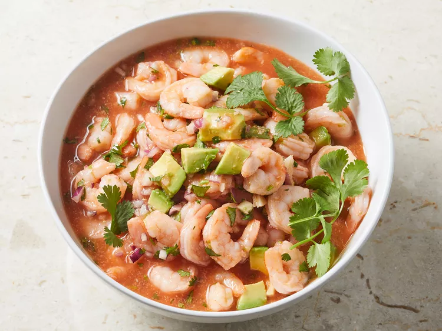

🍤 Mexican Shrimp Cocktail

Description :
This shrimp cocktail recipe is similar to one I first tried in San Antonio.
I could never find a recipe that recaptured what I had there.
I experimented and finally came up with the perfect combination of ingredients.
Ingredients :
- 2 pounds cooked shrimp, peeled and deveined
- ½ cup finely chopped red onion
- ¼ cup fresh cilantro, chopped
- 1 tablespoon crushed garlic
- 1 ½ cups tomato and clam juice cocktail
- ¼ cup ketchup
- ¼ cup fresh lime juice
- ¼ cup prepared horseradish
- 1 teaspoon hot pepper sauce, or to tastesalt to taste
- 1 ripe avocado - peeled, pitted and chopped
Steps :
-
Gather all ingredients.
-
Place shrimp in a large bowl.
Stir in red onion, cilantro, and garlic.
-
Add tomato and clam juice, ketchup,
lime juice, horseradish, and hot pepper sauce;
mix well to combine. Season with salt.
-
Gently stir in avocado.
Cover, and refrigerate for 2 to 3 hours.